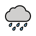

These are the weather words, the four seasons, and the twelve months. The weather nouns and season names are naming words, so they carry grammatical gender — watch the color: blue = masculine (el), red = feminine (la).
Press play on each word to hear a native voice, say it aloud, then use the flip cards to test yourself. The patterns to use these words are the three tools from yesterday — nothing new there.
- el solsun (masculine) · hace sol
- el calorheat (masculine) · hace calor = it's hot
- el fríocold (masculine) · hace frío = it's cold
- el vientowind (masculine) · hace viento = it's windy
- frescocool · hace fresco = it's cool
- nubladocloudy · está nublado
- despejadoclear · está despejado
- llueveit rains / it's raining (from llover)
- nievait snows / it's snowing (from nevar)
- la primaveraspring (feminine)
- el veranosummer (masculine)
- el otoñofall / autumn (masculine)
- el inviernowinter (masculine)
- eneroJanuary
- febreroFebruary
- marzoMarch
- abrilApril
- mayoMay
- junioJune
- julioJuly
- agostoAugust
- septiembreSeptember
- octubreOctober
- noviembreNovember
- diciembreDecember
In English we capitalize months (January, July). In Spanish, months are always lowercase — enero, julio, diciembre — unless they start a sentence. The same goes for days of the week. Write Mi cumpleaños es en agosto, not Agosto. (Months are grammatically masculine: en enero — in January.)




Because the three tools are already yours, you can build real sentences right now — and tie the weather to a season or month:
- En el verano hace calor. — In the summer it's hot.
- En el invierno hace frío y a veces nieva. — In the winter it's cold and sometimes it snows.
- En abril llueve mucho; en la primavera hace fresco. — In April it rains a lot; in the spring it's cool.
New words, familiar patterns — exactly the way this week is built.